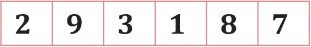

Chapter 1: Complete DAA Notes: Unit 1 — Elementary Algorithms & Analysis¶
Course Code: 3CS501CC24 Course Title: Design & Analysis of Algorithm Primary Source: DAA_Unit0_Introduction.pptx, DAA_Unit1.pptx, DAA_Unit2.pptx Files Integrated:
DAA_Unit 0_Introduction.pptx,DAA_Unit1.pptx,DAA_Unit2.pptx
1. Course Overview (Unit 0)¶
References: 1. Charles E. Leiserson, Thomas H. Cormen, Ronald L. Rivest, Clifford Stein - Introduction to Algorithms, PHI 2. Ellis Horowitz, Sartaj Sahni, Sanguthevar Rajasekharan - Fundamentals of Computer Algorithms, Galgotia 3. Jean-Paul Tremblay and Paul G. Sorenson - An Introduction to Data Structures with Applications, Tata McGraw Hill 4. Karumanchi, Narasimha - Data Structures and Algorithms Made Easy, CareerMonk Publications
Teaching & Evaluation Scheme: - Credits: Theory (3), Tutorial (0), Practical (2) \(\implies\) Total Credits: 4 - Evaluation Methodology: - Continuous Evaluation (CE): 60% Weightage (CT - 20, Sessional - 30, Innovative Assignment - 50) - Semester End Exam (SEE): 40% Weightage (Duration: 3.0 Hrs) - Syllabus: Available on the LMS Site.
[Source: DAA_Unit_0_Introduction.pptx, Slides 3-5]
2. Introduction to Algorithms¶
Definition: Algorithm¶
Formal Definition: An algorithm is any well-defined computational procedure that takes some value, or a set of values, as input and produces some value, or a set of values, as output. It is a sequence of computational steps that transform the input into the desired output.
Intuition: Think of it like a recipe for a chocolate cake. The ingredients are the inputs, the step-by-step cooking process is the algorithm, and the final cake is the output.
5 Properties of an Algorithm¶
Every algorithm must satisfy the following five key characteristics (along with Correctness): 1. Input: An algorithm has zero or more externally supplied inputs. 2. Output: An algorithm must produce at least one desirable output. 3. Definiteness: Each step of the algorithm must be precisely and unambiguously defined. 4. Finiteness: The algorithm must always terminate after a finite number of steps. 5. Effectiveness: All operations to be performed must be sufficiently basic and essential such that they can be carried out, in principle, by a person using paper and pencil. 6. Correctness (Crucial Property): It must halt with the correct output for every possible valid input instance.
Algorithm vs Program Distinction¶
- Algorithm: The logic or mathematical concept to solve a general, well-specified problem. It is platform-independent (stays the same whether implemented in Pascal on a Cray or in BASIC on a Mac).
- Program: The concrete implementation of an algorithm in a specific programming language, tied to a specific hardware and software environment.
[Source: DAA_Unit_0_Introduction.pptx, Slides 6-13]
3. Analysis of Algorithms¶
What is Analysis?¶
Analyzing an algorithm means mathematically predicting the computing resources that the algorithm requires. By analyzing candidate algorithms for a given problem, we can identify the most efficient one.
Resources Analyzed¶
- Time Complexity: The amount of computing execution time an algorithm needs to run to completion, measured as a function of the input size \(n\).
- Space Complexity: The amount of working storage (memory) required by the algorithm during its execution. Note: Because memory is cheaply available in abundance today, Time Complexity is generally considered the decisive measure of an algorithm's performance.
Approaches to Analysis¶
- Empirical (Posteriori) Approach:
- Write a program and run it to measure actual processor time.
- Disadvantages: Depends heavily on hardware/software environments, compiler used, and specific test data. It may not reflect the algorithm's performance on inputs outside the experiment.
- Theoretical (Priori) Approach:
- Mathematically compute the time needed as a function of the input size \(n\).
- Advantages: Speed and efficiency are determined independently of the hardware or software environment. Characterizes the running time for all possible input values.
Machine Model (RAM Model)¶
To analyze theoretically, we use the generic Random Access Machine (RAM) model: - It contains one single-core processor executing instructions sequentially (no concurrent operations). - Standard primitive/elementary operations (arithmetic, data movement like load/store, and control like branching) take a constant amount of time, say \(c\). - Time complexity is essentially determined by counting the total number of these elementary steps.
[Source: DAA_Unit_0_Introduction.pptx, Slides 19-24 & DAA_Unit1.pptx, Slides 3-6]
4. Cases of Analysis¶
An algorithm may not exhibit the same performance for all inputs of the exact same size \(n\). Its running time can vary based on the nature or initial arrangement of the input elements.
Best Case¶
- Formal Definition: The minimum number of steps or operations required by an algorithm for an input of size \(n\).
- Intuition: The algorithm's behavior under optimal conditions. It provides the lower bound on running time.
- Example: In a Linear Search algorithm, if the target element is found at the very first index of the array, the search takes minimum time \(\mathcal{O}(1)\).
Worst Case (Most Important)¶
- Formal Definition: The maximum number of steps or operations required by an algorithm for an input of size \(n\).
- Intuition: The algorithm's behavior under the worst possible conditions. It provides an upper bound on running time, ensuring the algorithm will never take longer than this. This is the most heavily relied-upon metric.
- Example: In a Linear Search algorithm, if the target element is at the very last index or is not present in the array at all, the algorithm must check every single element, taking \(\mathcal{O}(n)\) time.
Average Case¶
- Formal Definition: The expected or average number of steps required by an algorithm over all possible inputs of size \(n\).
- Intuition: The algorithm's behavior under typical or random conditions.
- Example: In a Linear Search, on average, the target element might be found halfway through the array, requiring \(n/2\) comparisons. Asymptotically, we drop the constant factor, giving an average time complexity of \(\mathcal{O}(n)\).
[Source: DAA_Unit1.pptx, Slides 13-17]
5. Rate of Growth¶
The rate of growth describes how quickly the execution time increases as the input size \(n\) approaches infinity.
Order of Growth (Slowest to Fastest)¶
When comparing efficiency, lower growth is better. The standard hierarchy of common functions is:
Growth Function Table¶
| Function Name | Notation | Growth Rate |
|---|---|---|
| Constant | \(\mathcal{O}(1)\) | Slowest (Best) |
| Logarithmic | \(\mathcal{O}(\log n)\) | Very Slow |
| Square Root | \(\mathcal{O}(\sqrt{n})\) | Slow |
| Linear | \(\mathcal{O}(n)\) | Moderate |
| Linearithmic | \(\mathcal{O}(n \log n)\) | Moderate to Fast |
| Quadratic | \(\mathcal{O}(n^2)\) | Fast (Poor for large \(n\)) |
| Cubic | \(\mathcal{O}(n^3)\) | Very Fast |
| Exponential | \(\mathcal{O}(2^n)\) | Explosive |
| Factorial | \(\mathcal{O}(n!)\) | Most Explosive (Worst) |
Numerical Growth Example¶
To see why order of growth matters as input size increases, consider the values of these functions for varying \(n\):
| \(n\) (Input Size) | \(\log_2 n\) | \(n\) | \(n \log_2 n\) | \(n^2\) | \(n^3\) | \(2^n\) |
|---|---|---|---|---|---|---|
| 10 | ~3.3 | 10 | 33 | 100 | 1,000 | 1,024 |
| 100 | ~6.6 | 100 | 664 | 10,000 | 1,000,000 | \(1.26 \times 10^{30}\) |
| 1,000 | ~10.0 | 1,000 | 10,000 | 1,000,000 | \(10^9\) | \(1.07 \times 10^{301}\) |
[Source: DAA_Unit1.pptx, Slides 41-42]
6. Asymptotic Notations¶
Asymptotic notations are mathematical tools used to express the time and space complexity of algorithms independent of machine-specific constants. They describe the limiting behavior of a function as its argument tends towards a particular value or infinity.
6.1 Big-O Notation (Upper Bound)¶
- Formal Definition: \(f(n) = \mathcal{O}(g(n))\) if there exist positive constants \(c > 0\) and \(n_0 > 0\) such that:
- Intuition: \(g(n)\) provides an asymptotic upper bound on the growth rate of \(f(n)\). The algorithm's running time will not cross the boundary of \(c \cdot g(n)\) for large inputs. It defines the worst-case behavior.
- Simplification Rules:
- Drop constant multipliers: \(\mathcal{O}(50 n \log n) \implies \mathcal{O}(n \log n)\)
- Drop lower-order terms: \(\mathcal{O}(8n^2 \log n + 5n^2 + n) \implies \mathcal{O}(n^2 \log n)\)
- Worked Example (from slides): Prove that \(f(n) = 6n + 3\) is \(\mathcal{O}(n)\). Proof: We need to find \(c\) and \(n_0\) such that \(6n + 3 \le c \cdot n\). For \(n \ge 1\): \(6n + 3 \le 6n + 3n = 9n\). Thus, taking \(c = 9\) and \(n_0 = 1\), the condition holds. Therefore, \(6n + 3 = \mathcal{O}(n)\).
- Worked Example (Constant function): Prove that \(f(n) = 6993\) is \(\mathcal{O}(1)\). Proof: We need \(6993 \le c \cdot 1\). Choose \(c = 6993\) and \(n_0 = 1\). The inequality holds. Thus, \(f(n) = \mathcal{O}(1)\).

6.2 Big-Omega Notation (Lower Bound)¶
- Formal Definition: \(f(n) = \Omega(g(n))\) if there exist positive constants \(c > 0\) and \(n_0 > 0\) such that:
- Intuition: \(g(n)\) provides an asymptotic lower bound. The algorithm takes at least this much time to execute. It's often used to denote best-case time complexity.
- Worked Example: Prove that \(f(n) = 3n^2 + 2n + 4\) is \(\Omega(n^2)\). Proof: We need \(c \cdot n^2 \le 3n^2 + 2n + 4\). Since \(n \ge 1\), we clearly know \(1 \cdot n^2 \le 3n^2 \le 3n^2 + 2n + 4\). Thus, by taking \(c = 3\) (or \(c=1\)) and \(n_0 = 1\), the inequality is satisfied. Therefore, \(f(n) = \Omega(n^2)\).
6.3 Big-Theta Notation (Tight Bound)¶
- Formal Definition: \(f(n) = \Theta(g(n))\) if there exist positive constants \(c_1 > 0\), \(c_2 > 0\), and \(n_0 > 0\) such that:
Alternatively, \(f(n) = \Theta(g(n))\) iff \(f(n) = \mathcal{O}(g(n))\) AND \(f(n) = \Omega(g(n))\). - Intuition: \(f(n)\) grows exactly at the same rate as \(g(n)\) asymptotically. It defines the exact asymptotic behavior of an algorithm, bounding it from both above and below. - Worked Example: Prove that \(f(n) = 2n^3 + 4n + 5\) is \(\Theta(n^3)\). Proof: We need \(c_1 n^3 \le 2n^3 + 4n + 5 \le c_2 n^3\). Lower bound: For \(n \ge 1\), \(2n^3 \le 2n^3 + 4n + 5\). So \(c_1 = 2\). Upper bound: For \(n \ge 1\), \(2n^3 + 4n + 5 \le 2n^3 + 4n^3 + 5n^3 = 11n^3\). So \(c_2 = 11\). By taking \(c_1 = 2, c_2 = 11, n_0 = 1\), the relation holds. Therefore, \(f(n) = \Theta(n^3)\). - Worked Example 2: Prove that \(3n + 2 = \Theta(n)\). Proof: We need \(c_1 \cdot n \le 3n + 2 \le c_2 \cdot n\). For \(n \ge 1\), \(2n \le 3n + 2 \le 5n\). So \(c_1 = 2\), \(c_2 = 5\), \(n_0 = 1\). Thus, \(3n + 2 = \Theta(n)\). - Worked Example 3: Prove that \(6 \cdot 2^n + n^2 = \Theta(2^n)\). Proof: We need \(c_1 \cdot 2^n \le 6 \cdot 2^n + n^2 \le c_2 \cdot 2^n\). For \(n \ge 1\), \(6 \cdot 2^n \le 6 \cdot 2^n + n^2 \le 7 \cdot 2^n\). So \(c_1 = 6\), \(c_2 = 7\), \(n_0 = 1\). Thus, \(6 \cdot 2^n + n^2 = \Theta(2^n)\).
6.4 Little-o Notation (Strict Upper Bound)¶
- Formal Definition: \(f(n) = o(g(n))\) if for every constant \(c > 0\), there exists a constant \(n_0 > 0\) such that \(0 \le f(n) < c \cdot g(n)\) for all \(n \ge n_0\). Alternatively, defined using limits:
- Intuition: \(f(n)\) grows strictly slower than \(g(n)\). \(g(n)\) is a loose upper bound.
- Example: \(2n = o(n^2)\), but \(2n^2 \neq o(n^2)\).
6.5 Little-omega Notation (Strict Lower Bound)¶
- Formal Definition: \(f(n) = \omega(g(n))\) if for every constant \(c > 0\), there exists a constant \(n_0 > 0\) such that \(0 \le c \cdot g(n) < f(n)\) for all \(n \ge n_0\). Alternatively, defined using limits:
- Intuition: \(f(n)\) grows strictly faster than \(g(n)\). \(g(n)\) is a loose lower bound.
- Example: \(n^2 = \omega(n)\), but \(n^2 \neq \omega(n^2)\).
6.6 Comparison Table¶
| Notation | Meaning | Relation | Example |
|---|---|---|---|
| \(\mathcal{O}\) | Asymptotic Upper Bound | \(f \le g\) | \(3n^2 + 5n = \mathcal{O}(n^2)\) |
| \(\Omega\) | Asymptotic Lower Bound | \(f \ge g\) | \(3n^2 + 5n = \Omega(n^2)\) |
| \(\Theta\) | Asymptotically Tight Bound | \(f = g\) | \(3n^2 + 5n = \Theta(n^2)\) |
| \(o\) | Strict Upper Bound | \(f < g\) | \(3n = o(n^2)\) |
| \(\omega\) | Strict Lower Bound | \(f > g\) | \(3n^2 = \omega(n)\) |
6.7 Properties of Asymptotic Notations¶
- Transitivity: If \(f(n) = \Theta(g(n))\) and \(g(n) = \Theta(h(n))\), then \(f(n) = \Theta(h(n))\). (Holds true for \(\mathcal{O}, \Omega, o, \omega\) as well).
- Reflexivity: \(f(n) = \Theta(f(n))\), \(f(n) = \mathcal{O}(f(n))\), \(f(n) = \Omega(f(n))\). (Does NOT hold for \(o\) and \(\omega\)).
- Symmetry: \(f(n) = \Theta(g(n))\) if and only if \(g(n) = \Theta(f(n))\). (Only true for \(\Theta\)).
- Transpose Symmetry: \(f(n) = \mathcal{O}(g(n))\) if and only if \(g(n) = \Omega(f(n))\). \(f(n) = o(g(n))\) if and only if \(g(n) = \omega(f(n))\).
- Maximum Rule: \(\mathcal{O}(f(n) + g(n)) = \mathcal{O}(\max(f(n), g(n)))\).
[Source: DAA_Unit1.pptx, Slides 27-49]
7. Analyzing Control Statements (Unit 2)¶
To analyze the time complexity of a program, we dissect the code into its structural components.
7.1 Rules for Complexity Analysis¶
| Code Construct | Time Complexity | Rule |
|---|---|---|
| Single statement | \(\mathcal{O}(1)\) | Constant time |
| Sequence of k statements | \(\mathcal{O}(\max)\) | Take maximum |
| Simple for loop (1 to n) | \(\mathcal{O}(n)\) | \(n\) iterations |
| Nested for loops (n×n) | \(\mathcal{O}(n^2)\) | Multiply counts |
| While loop | depends on condition | Count iterations |
| If-else | \(\mathcal{O}(\max(\text{then}, \text{else}))\) | Take max branch |
| Function call | \(\mathcal{O}(\text{cost of function})\) | Include callee |
7.2 Worked Examples¶
Example: Sum of array (simple for loop)
int Sum(int A[], int n) {
int s = 0; // O(1) -> executes 1 time
for (int i = 0; i < n; i++) // Condition checked n+1 times
s = s + A[i]; // Body executes n times
return s; // O(1) -> executes 1 time
}
Example 1: Single Statement
Analysis: Statement is executed once only. The execution time is some constant. Time Complexity: \(\mathcal{O}(1)\)Example 2: Simple For Loop
Analysis: The loop iterates \(n\) times. Inside is an \(\mathcal{O}(1)\) operation. Time Complexity: \(\mathcal{O}(n)\)Example 3: Nested For Loops
Analysis: Outer loop runs \(n\) times. For each iteration, inner loop runs \(n\) times. Total iterations = \(n \times n = n^2\). Time Complexity: \(\mathcal{O}(n^2)\)Example 4: Dependent Nested For Loops
Analysis: The inner loop runs \(1\) time, then \(2\) times... up to \(n\).Time Complexity: \(\mathcal{O}(n^2)\)
Example 5: Multiplicative Loop
Analysis: The loop variable doubles each step: \(1, 2, 4, 8, \dots, 2^k\). The loop stops when \(2^k > n \implies k = \log_2 n\). Time Complexity: \(\mathcal{O}(\log n)\)Example 6: Multiplicative Outer, Additive Inner
Analysis: Outer loop runs \(n\) times. Inner loop runs \(\log_2 n\) times. Time Complexity: \(\mathcal{O}(n \log n)\)Example 7: Division Loop
Analysis: Loop halves the variable at each step: \(n, n/2, n/4, \dots, 1\). This takes \(\log_2 n\) steps. Time Complexity: \(\mathcal{O}(\log n)\)Example 8: Square Root Bound Loop
Analysis: Loop condition is \(i^2 \le n \implies i \le \sqrt{n}\). Time Complexity: \(\mathcal{O}(\sqrt{n})\)Example 9: Function Bound Loop
Analysis: Where \(f(n)\) is any sqrt or cuberoot function, the loop runs depending on the inverse of the function. For \(f(i) = \sqrt{i}\), it runs until \(\sqrt{i} = n \implies i = n^2\). For \(f(i) = i^3\), it runs \(\sqrt[3]{n}\) times.Example 10: Multi-Branch / Sequences
for(int i = 1; i <= n; i++) {
a = b + c;
}
for(int j = 1; j <= n; j++) {
for(int k = 1; k <= n; k++) {
x = y + z;
}
}
[Source: DAA_Unit2.pptx, Slides 2-6]
8. Formula Sheet¶
Big-O Notation:
Big-Omega Notation:
Big-Theta Notation:
Little-o Notation (using Limits):
Little-omega Notation (using Limits):
Sum of first \(n\) numbers:
Geometric Progression (Sum):
9. Definition Sheet¶
- Algorithm: A well-defined computational procedure that takes some value as input and produces some value as output.
- Time Complexity: A measure of the amount of execution time an algorithm needs to run to completion, represented as a function of input size.
- Space Complexity: A measure of the amount of working storage (memory) an algorithm needs.
- Best Case: The minimum number of operations required by an algorithm. Represents behavior under optimal conditions.
- Worst Case: The maximum number of operations required by an algorithm. Represents behavior under the worst conditions.
- Average Case: The expected number of operations required over all possible inputs of size \(n\).
- Big-O (\(\mathcal{O}\)): Denotes the asymptotic upper bound of a function.
- Big-Omega (\(\Omega\)): Denotes the asymptotic lower bound of a function.
- Big-Theta (\(\Theta\)): Denotes the exact, or tightly bounded, asymptotic behavior of a function.
- Little-o (\(o\)): Denotes a strict upper bound where a function grows strictly slower than another.
- Little-omega (\(\omega\)): Denotes a strict lower bound where a function grows strictly faster than another.
- Asymptotic Notation: Mathematical notations used to describe the limiting behavior of an algorithm's performance as the input size grows towards infinity.
10. Exam-Oriented Review¶
Important Concepts¶
- The difference between an empirical measurement and a theoretical (priori) analysis.
- Understanding why the worst-case scenario is practically preferred in algorithmic analysis.
- Recognizing the hierarchy of growth rates (e.g., \(1 < \log n < n < n \log n < n^2\)) to easily identify efficient algorithms.
- Identifying code patterns directly to their time complexity (e.g., simple loop \(\to\) linear, nested loops \(\to\) quadratic, halving loops \(\to\) logarithmic).
Important Definitions (Memorize)¶
- The 5 properties of an algorithm: Input, Output, Definiteness, Finiteness, Effectiveness.
- Formal definitions with constants (\(c, n_0\)) for \(\mathcal{O}\), \(\Omega\), and \(\Theta\).
Important Formulas¶
- The definitions of asymptotic bounds (see Formula Sheet).
- Limits for \(o\) and \(\omega\).
- Sum of series formulas used for nested dependent loops.
Important Comparisons¶
- Algorithm vs. Program
- Theoretical vs. Empirical Analysis
- Upper Bound (\(\mathcal{O}\)) vs. Lower Bound (\(\Omega\)) vs. Tight Bound (\(\Theta\))
Potential Exam Questions¶
- Define an algorithm and list its five fundamental characteristics.
- Differentiate between an algorithm and a program.
- Why is theoretical analysis of algorithms preferred over empirical testing?
- Define Space Complexity and Time Complexity. Why is Time Complexity usually the primary concern?
- Explain Best Case, Average Case, and Worst Case scenarios with an example (like linear search).
- Arrange the following functions in increasing order of asymptotic growth: \(n^2, n!, 2^n, n \log n, \log n, n\).
- State the formal definition of Big-O Notation and explain its significance.
- State the formal definition of Big-Theta (\(\Theta\)) Notation.
- Prove mathematically that \(3n + 2 = \Theta(n)\).
- Prove mathematically that \(2n^3 + 4n^2 = \Omega(n^2)\).
- Write pseudo-code for determining the sum of elements in an array and analyze its time complexity line by line.
- What is the time complexity of a loop structured as
for(i=1; i<=n; i=i*2)? Prove it. - Describe the Transpose Symmetry property of asymptotic notations.
- How does Little-o notation conceptually differ from Big-O notation?
- Analyze the time complexity of two nested loops where the inner loop depends on the outer loop variable (e.g.,
for(j=1; j<=i; j++)). - Find the upper bound of the running time of the constant function \(f(n) = 6993\).
- Find the tight bound of the running time of the cubic function \(f(n) = 2n^3 + 4n + 5\).